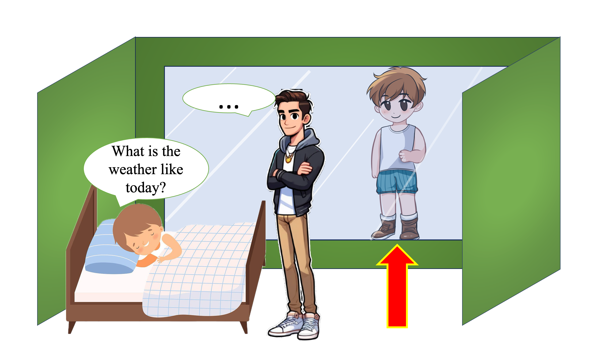
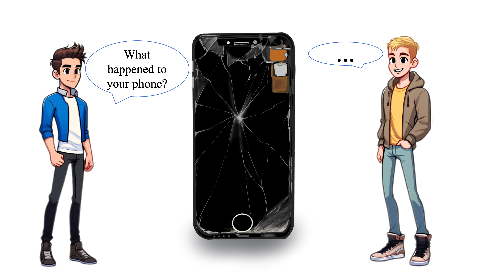
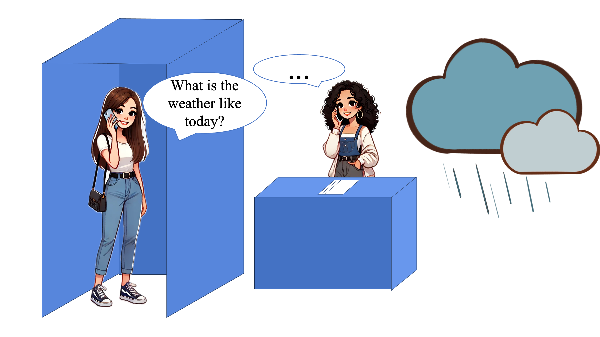

<!DOCTYPE html>
<html>
  <head>
    <title>My experiment</title>
        <!-- jQuery -->
    <script src="https://ajax.googleapis.com/ajax/libs/jquery/3.5.1/jquery.min.js"></script>
    <!-- Proliferate -->
    <script src="https://proliferate.alps.science/static/js/proliferate.js" type="text/javascript"></script>
    <script src="https://unpkg.com/jspsych@7.3.4"></script>
    <script src="https://unpkg.com/@jspsych/plugin-html-keyboard-response@1.1.3"></script>
    <script src="https://unpkg.com/@jspsych/plugin-html-button-response@1.1.3"></script>
    <script src="https://unpkg.com/@jspsych/plugin-image-keyboard-response@1.1.3"></script>
    <script src="jspsych/plugin-fullscreen.js"></script>
    <script src="https://unpkg.com/@jspsych/plugin-preload@1.1.3"></script>
    <script src="plugin/plugin-html-multi-slider-response.js"></script>
    <script src="jspsych/plugin-survey-text.js"></script>
    <link href="https://unpkg.com/jspsych@7.3.4/css/jspsych.css" rel="stylesheet" type="text/css" />
    <style>
      body {
        margin: 0;
        padding: 0;
      }

      .jspsych-html-slider-response-wrapper {
        margin-top: 10px;
      }

      .slider-labels {
        position: relative;
        width: 100%;
        display: flex;
        justify-content: space-between;
        margin-top: -10px; /* vertical position */
      }

      .slider-labels span {
        transform: translateX(-18%);
        font-size: 14px;
      }

      /* Adjust button position */
      .jspsych-btn {
        position: absolute; /* Make the position absolute */
        bottom: 30px; /* Position it from the bottom */
        left: 50%; /* Center horizontally */
        transform: translateX(-50%); /* Center alignment adjustment */
      }
      
      /* S */
      .consent-form {
        width: 707px;
      }

      .consent-form p, .consent-form li {
        text-align: left;
        font-size: 12px;
        line-height: 1.2em;
        margin: 5px 0;
      }

    </style>
  </head>
  <body></body>
  <script>
   
    var n_trials = 54; // Define the total number of trials

    /* initialize jsPsych */
    var jsPsych = initJsPsych({
      show_progress_bar: true,
      auto_update_progress_bar: false, // Disable automatic progress bar updates
      on_finish: function(data) {
        var vals = data.values(); 
        // check if the participant went through the experiment
        // or exited it during the consent forms
        if (vals.length > n_trials) {
          // Transmit data to Proliferate
          proliferate.submit({"trials": data.values()}); 
        }
      }
    });

  

    /* create timeline */
    var timeline = [];

    // First set of stimuli-cool/cold/freezing
    var stimuli1 = [
      'pic_new/pic_cool/Slide1.png',
      'pic_new/pic_cool/Slide2.png',
      'pic_new/pic_cool/Slide3.png',
      'pic_new/pic_cool/Slide4.png',
      'pic_new/pic_cool/Slide5.png',
      'pic_new/pic_cool/Slide6.png',
      'pic_new/pic_cool/Slide7.png',
      'pic_new/pic_cool/Slide8.png',
      'pic_new/pic_cool/Slide9.png'
    ];

    // Second set of stimuli-damaged/broken
    var stimuli2 = [
      'pic_new/pic_broken/Slide1.png',
      'pic_new/pic_broken/Slide2.png',
      'pic_new/pic_broken/Slide3.png',
      'pic_new/pic_broken/Slide4.png',
      'pic_new/pic_broken/Slide5.png',
      'pic_new/pic_broken/Slide6.png',
      'pic_new/pic_broken/Slide7.png',
      'pic_new/pic_broken/Slide8.png',
      'pic_new/pic_broken/Slide9.png'
    ];

    // Third set of stimuli-rainy/pouring
    var stimuli3 = [
      'pic_new/pic_rainy/Slide1.png',
      'pic_new/pic_rainy/Slide2.png',
      'pic_new/pic_rainy/Slide3.png',
      'pic_new/pic_rainy/Slide4.png',
      'pic_new/pic_rainy/Slide5.png',
      'pic_new/pic_rainy/Slide6.png',
      'pic_new/pic_rainy/Slide7.png',
      'pic_new/pic_rainy/Slide8.png',
      'pic_new/pic_rainy/Slide9.png'
    ];

    // Preload images for all three sets
    var preload = {
      type: jsPsychPreload,
      images: stimuli1.concat(stimuli2).concat(stimuli3)
    };

    timeline.push(preload);

    // Shuffle the stimuli arrays
    function shuffle(array) {
      for (let i = array.length - 1; i > 0; i--) {
        const j = Math.floor(Math.random() * (i + 1));
        [array[i], array[j]] = [array[j], array[i]];
      }
      return array;
    }

    stimuli1 = shuffle(stimuli1);
    stimuli2 = shuffle(stimuli2);
    stimuli3 = shuffle(stimuli3);

    // Create a function to generate the test object
    function createTest(stimulus, question, slider_labels, num_sliders) {
      return {
        type: jsPsychHtmlMultiSliderResponse,
        stimulus: '<div style="margin-top: -110px;"><p>' + question + '</p></div>',
        num_sliders: num_sliders,
        slider_labels: slider_labels,
        force_total: 100,
        button_label: 'Continue',
        labels: [],
        require_movement: true,
        on_finish: function() {
          // At the end of each trial, update the progress bar
          var curr_progress_bar_value = jsPsych.getProgressBarCompleted();
          jsPsych.setProgressBar(curr_progress_bar_value + (1 / n_trials));
        },
        on_load: function() {
          document.querySelectorAll('.jspsych-html-slider-response-container').forEach((container, index) => {
            var labels = ['0', '50', '100'];
            var labelDiv = document.createElement('div');
            labelDiv.className = 'slider-labels';
            labels.forEach(function(label, i) {
              var labelSpan = document.createElement('span');
              labelSpan.innerHTML = label;
              labelSpan.style.position = 'absolute';
              labelSpan.style.left = `${i * 21.8 + 42.8}%`;
              labelDiv.appendChild(labelSpan);
            });
            container.appendChild(labelDiv);
          });
        }
      };
    }

      //Define first part of consent form
  const consent1 = {
    type: jsPsychHtmlButtonResponse,
    stimulus: '<div class="consent-form"><p></p>' +
    '<p style="text-align:center;font-weight:bold;">ONLINE INFORMATION SHEET</p>' +
    '<p><strong>Title of Project</strong>: The cognitive basis of pragmatic inferences</p>' +
    '<p>This study has been approved by the RD Ethics Chair as LING-2021-01-21</p><p>&nbsp;</p>' +
    '<p><strong>Name, Address and Contact Details of Principal Investigator:</strong></p>' +
    '<p>' +
    'Richard Breheny (<a href="mailto:r.breheny@ucl.ac.uk">r.breheny@ucl.ac.uk</a>)<br>UCL Linguistics<br>Division of Psychology and Language Sciences<br>Chandler House<br>2 Wakefield Street<br>London WC1N 1PF</p><p>&nbsp;</p>' +
    '<p><strong>Other investigators:</strong></p>' +
    '<p>Sebastian Schuster, Yuting Yuan</p>' +
    '<p>&nbsp;</p>' +
    '<p>We would like to invite you to participate in this research project. You should only participate if you want to. Choosing not to take part will not disadvantage you in any way. Before you decide whether you want to take part, please read the following information carefully. Please contact us if there is anything that is not clear or if you would like more information (<a href="mailto:s.schuster@ucl.ac.uk">s.schuster@ucl.ac.uk</a>).</p>' +
    '<p>&nbsp;</p>' +
    '<p><strong>Details of Study</strong></p>' +
    "<p>This study forms part of a research project under the supervision of Professor Richard Breheny in the Linguistics Department of the UCL Division of Psychology and Language Sciences which looks at how people process language. The study addresses the question of how people read more into communication than the actual words say. We will record participants' responses and responses may be timed.</p>" +
    '<p>&nbsp;</p>' +
    '<p><strong>Possible risks and benefits</strong></p>' +
    '<p>The testing session will take approximately <strong>15 minutes</strong> (including breaks). You are free to withdraw from the experiment at any time.  Once you have completed the experiment, you will be redirected to the recruitment platform you used to access our study, and you will be compensated for your time.</p>' +
    '<p>It is up to you to decide whether or not to take part. If you do decide to take part, you will be asked to provide an informed consent. Even after agreeing to take part, you can still withdraw at any time and without giving a reason.</p>' +
    '<p>All data are collected and stored in accordance with the provisions of the General Data Protection Regulations and the Data Protection Act 2018.</p><p>&nbsp;</p></div>',
    choices: ['Leave the study', 'Continue'],
    button_html: '<button class="jspsych-btn" style="transform: none; position: relative;  left:auto; bottom: auto;">%choice%</button>',
    on_finish: function(data) {
      if (data.response == "0") {
        jsPsych.endExperiment('Please return this study and close this window! Thank you for your interest.');
      }
    }

  };

    timeline.push(consent1);

      // Define second part of consent form
  const consent2 = {
    type: jsPsychHtmlButtonResponse,
    stimulus: '<div class="consent-form"><p></p>' +
    '<p style="text-align:center;font-weight:bold;">ONLINE CONSENT FORM</p>' +
    '<p><strong>Title of Project</strong>: The cognitive basis of pragmatic inferences</p>' +
    '<p>This study forms part of a research project under the supervision of Professor Richard Breheny in the Linguistics Department of the UCL Division of Psychology and Language Sciences. This study has been approved by the RD Ethics Chair as LING-2021-01-21</p>' +
    '<p>Please read the following information carefully:</p>' +
    '<ul>' +
    '<li>You have read and understood the information sheet explaining the project, risks and benefits.</li>' +
    '<li>You understand that you have the right to withdraw at any point during the study, for any reason, and without any prejudice.</li>' +
    '<li>You understand that you must not participate if you suffer from photosensitive epilepsy.</li>' +
    '<li>You consent to the processing of the anonymised data collected for the purposes of this study only and not for any other purposes.</li>' +
    '<li>You consent to the processing of the anonymised data collected for the purposes of this study only and not for any other purposes.</li>' +
    '<li>All data are collected and stored in accordance with the provisions of the General Data Protection Regulations and the Data Protection Act 2018. If you are concerned about how the data is being processed, please contact UCL in the first instance at data-protection@ucl.ac.uk</li>' +
    '</ul>' +
    '<p>If you would like to contact the Principal Investigator in the study to discuss this research, please e-mail <a href="mailto:r.breheny@ucl.ac.uk">r.breheny@ucl.ac.uk</a>.</p><p>&nbsp;</p></div>',
    choices: ['I do NOT consent (leave)', 'I consent (continue)'],
    button_html: '<button class="jspsych-btn" style="transform: none; position: relative;  left:auto; bottom: auto;">%choice%</button>',
    on_finish: function(data) {
      if (data.response == "0") {
        jsPsych.endExperiment('Please return this study and close this window! Thank you for your interest.');
      }
    }
  };

  timeline.push(consent2);

    var instructions = {
      type: jsPsychHtmlButtonResponse,
      stimulus: "In this experiment, you will see several scenes and answer questions about them. <br>On each slide, you will see a picture and several utterances. <br>Please move the sliders for each utterance to indicate how likely you think it is that the speaker would say this.<br><br><strong>Note: The ratings must add up to 100 and the sliders will automatically snap back if you try to assign more than 100 points.</strong><br><br>When you're ready to begin, please click the button.",
      choices: ['Continue'],
      button_html: '<button class="jspsych-btn" style="margin-top: 20px;">%choice%</button>'
    };

    timeline.push(instructions);

    // Enter fullscreen mode
    const enter_fullscreen = {
      type: jsPsychFullscreen,
      fullscreen_mode: true
    }

    timeline.push(enter_fullscreen);

    // Add back1 before stimuli1
    const back1 = {
      type: jsPsychHtmlButtonResponse,
      stimulus: '<p>The experiment is divided into three parts. In the first part, you will see a similar scene presented below.</p> In this scene, Albert just woke up. Without opening with eyes, he asked George, "What is the weather like today?" <br>George looked outside and, by seeing how the boy was dressed, gave him the answer.<br><p>If you have understood the example scene, please click the button, and the first task will begin.',
      choices: ['Continue'],
      button_html: '<button class="jspsych-btn" style="margin-top: 20px;">%choice%</button>'
    };

    timeline.push(back1);

    // Function to add stimuli to the timeline
    function addStimuliToTimeline(stimuli, question, slider_labels, num_sliders) {
      stimuli.forEach(function(stimulus) {
        timeline.push(createTest(stimulus, question, slider_labels, num_sliders));
      });
    }

    // Add stimuli sets to the timeline with appropriate questions, slider labels, and number of sliders
    addStimuliToTimeline(stimuli1, 'How likely do you think it is that the man will respond with each of the following sentences?', ['It is cool today.', 'It is cold today.', 'It is freezing today.', '<em>something else<em>'], 4);
    addStimuliToTimeline(stimuli1, 'How likely do you think it is that the man will respond with each of the following sentences?', ['It is cool today.', 'It is cold today.', 'It is freezing today.', '<em>something else<em>'], 4);

    // Add back2 before stimuli2
    const back2 = {
      type: jsPsychHtmlButtonResponse,
      stimulus: '<br>Jonas and Kevin were walking outside. A boy riding a bike sped by and hit Jonas. <br>His phone fell to the ground. Jonas picked up his phone, looked at it, and said nothing.<br> Kevin leaned over to see what happened and asked "What happened to your phone?" Jonas replied something. <br><p>If you have understood the example scene, please click the button, and the second task will begin.</p>',
      choices: ['Continue'],
      button_html: '<button class="jspsych-btn" style="margin-top: 20px;">%choice%</button>'
    };

    timeline.push(back2);

    addStimuliToTimeline(stimuli2, 'How likely do you think it is that the man will respond with each of the following sentences?', ['It is damaged.', 'It is broken.', '<em>something else<em>'], 3);
    addStimuliToTimeline(stimuli2, 'How likely do you think it is that the man will respond with each of the following sentences?', ['It is damaged.', 'It is broken.', '<em>something else<em>'], 3);

    // Add back3 before stimuli3
    const back3 = {
      type: jsPsychHtmlButtonResponse,
      stimulus: '<br>Sarah came to London for a trip. When she arrived at the hotel, she discovered that the room she booked had no windows.<br>Unfortunately, no other rooms were available, so she had to stay there. <br>The next morning before going out, she wanted to know what the weather was like outside. <br>She called the hotel front desk and asked, "What is the weather like today?" The front desk replied something.<br><p>If you have understood the example scene, please click the button, and the third task will begin.</p>',
      choices: ['Continue'],
      button_html: '<button class="jspsych-btn" style="margin-top: 20px;">%choice%</button>'
    };

    timeline.push(back3);

    addStimuliToTimeline(stimuli3, 'How likely do you think it is that the woman will respond with each of the following sentences?', ['It is rainy today.', 'It is pouring today.', '<em>something else<em>'], 3);
    addStimuliToTimeline(stimuli3, 'How likely do you think it is that the woman will respond with each of the following sentences?', ['It is rainy today.', 'It is pouring today.', '<em>something else<em>'], 3);

    var Survey = {
      type: jsPsychSurveyText,
      questions: [
        {prompt: 'If you encountered any technical difficulties, found anything odd, or if you have any other comments about the experiment that you would like to share with us, please type them in the box below:', rows: 5}
      ]
    }
    timeline.push(Survey);

    const end_of_experiment = {
      type: jsPsychHtmlKeyboardResponse,
      stimulus: '<p>Thanks for participation. This is the end of language experiment.<br>Please press the space bar to exit.</p>',
      trial_duration: null,
      choices: [' ']
    };

    timeline.push(end_of_experiment);

    //Exit fullscreen mode
    const exit_fullscreen = {
        type: jsPsychFullscreen,
        fullscreen_mode: false
    }

    timeline.push(exit_fullscreen);

    /* start the experiment */
    jsPsych.run(timeline);
  </script>
</html>
